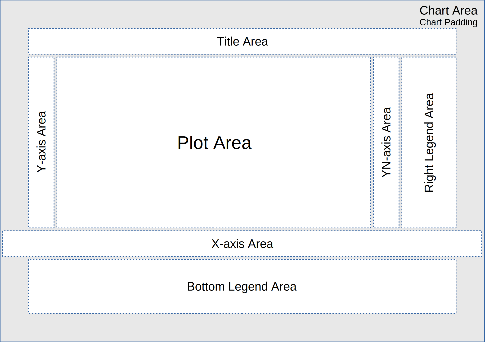

Chart Pro Plugin es un complemento adicional, opcional, para la aplicación Webstation. Extiende las capacidades de los gráficos de Rapid SCADA: agrega escalado, permite mostrar múltiples curvas y las exporta en formatos PNG y PDF.
Primero debe realizar la the general sequence of installing plugins (secuencia general de instalación de complementos) y luego realizar varias acciones adicionales:
El complemento Chart Pro viene configurado de forma predeterminada. La configuración del complemento está guardada en el archivo PlgChartPro.xml, que se encuentra en el Proyecto en el directorio de configuración de la Webstation. Si es necesario, el administrador del sistema podrá cambiar la configuración editando el archivo existente o creando un nuevo archivo de configuración.
Además del archivo de configuración, la visualización de las gráficas está determinada por la cadena de consulta. La cadena de consulta tiene la siguiente forma:
http://localhost/Scada/plugins/ChartPro/ChartPro.aspx?cnlNums=101&viewIDs=2&year=2020&month=3&day=31&mode=fixed&period=1&title=Test&config=PlgChartPro.xml
Los parámetros de la cadena de consulta son los siguientes.
| Parámetro | Valores | Descripción |
|---|---|---|
| cnlNums | Enteros separados por coma | Números de canales de entrada mostrados en la gráfica |
| viewIDs | Enteros separados por coma | Identificadores de Vista para cada canal de entrada |
| year, month, day | Enteros | Fecha de inicio de los datos mostrados. Si no se les especifica, se usa la fecha actual |
| mode | fijo | rodante | Modo operativo de la gráfica: fija o rodante (continuo) |
| period | Entero (positivo o negativo) | Período de la gráfica en relación a la fecha de inicio. Días para el modo fijo y minutos para el modo rodante (continuo) |
| title | Cadena. Puede estar vacía | Título de la gráfica |
| config | Cadena. Puede estar vacía | Nombre del archivo de configuración de la gráfica en relación con el directorio de configuración de la aplicación Web |
En el modo fijo, el complemento (plugin) muestra una gráfica durante el período de tiempo seleccionado. Los datos de la gráfica son actualizados automáticamente agregándose los nuevos valores en el lado derecho de la misma.
En el modo rodante o continuo, el plugin muestra una gráfica desde el momento actual hasta un tiempo especificado. Los datos de la gráfica se actualizan automáticamente, mientras que la gráfica se desplaza de derecha a izquierda.
La siguiente figura ayuda a comprender el diseño del gráfico para cambiar la configuración del complemento:
